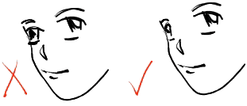

Anime Faces Animagess' How To Draw
Face Styles and Design Examples
We'll start with a bunch of examples of ways to draw the pieces that go together to make a face. These aren't the only ways to draw the parts, but they should give you an idea of where to start.
Here are some eyes:
Here are some noses:
Here are some mouths:
Here are some ears:

Here are some face shapes:
Here are some hairstyles:
The next step is just learning how to put them all together.
Face Structure
Here is step one:
 Seriously, though, this is really all you need to create a decent anime character. Classic manga series have been built on less. But I'm sure you're all looking for something a bit more advanced, in which case we revert to something even simpler than we've got up there:
Seriously, though, this is really all you need to create a decent anime character. Classic manga series have been built on less. But I'm sure you're all looking for something a bit more advanced, in which case we revert to something even simpler than we've got up there:
The rest is a little more complicated.
- Okay, so you take your circle...
- Now add a line down the direction the head is facing.
- Then add a horizontal line. Important: This is where the eyes are gonna go!
- Then add the lower jaw. This can be any shape or size you want, as long as its relatively symmetrical (else you end up with a butt-ugly character).
- Then you just add eyes, ears, nose, and mouth--not necessarily in that order, or number, for that matter!
- Erase junk lines and touch-up.
- Add stuff.
- Now, sit back and admire your work, basking in the sheer pleasure of self-satisfaction that comes from knowing that you have indeed mastered everything there is to learn about drawing anime.
Congratulations. Now get your butt back to the drawing board, 'cuz we ain't done yet.
If you want your character to be facing in a direction other than straight forward, you're going to have to make other arrangements.
The basic method is the same...
But certain facial proportions are going to be a bit different.
Here are some examples.
Tips
- Make sure you remember where the hairline is. You don't want any abnormally flattened scalps.
- Remember, this way is not the only way. Experiment.
- When using foreshortening, remember to compress the eye. 
- When the head is tilted vertically, the proportions will squish together in different ways. This is tricky to pull off, but can make for an interesting effect.
- The eyes are always above the cheekbone. Another common mistake.
- Everything looks different in profile. Keep practicing.
That's all there is from Animagess for now, but let her know what you think of her work, and perhaps we'll be seeing more lessons from her in the future.